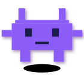

A composable SVG animation system driven by Claude Code.
Describe an animation in natural language. Get a production-ready
.svg file.
Open the repo in Claude Code. Type a sentence. Watch it animate.
/svg-animate auto-triggers → forks the closest existing preset (claude-jumping) → reuses 4 motion primitives + 2 shape primitives → writes output/purple-robot-jumping.svg → /svg-verify dispatches a subagent, returns ≤100-word verdict → iterates once on the feedback → offers /svg-export to ship
No SVG hand-written. No keyframe manually computed. The 5th preset
below (purple-robot-jumping) was generated entirely from
that single sentence in a real field test.
Each preset is a working file (~30–50 lines) that composes motion, shape, and filter primitives. Click to view source.

git clone https://github.com/ChanMeng666/svg-animation-studio.git cd svg-animation-studio npm install npm run dev # preview grid at localhost:3030 node lib/render-cli.js claude-jumping # render a preset to output/ npm test # snapshot test suite